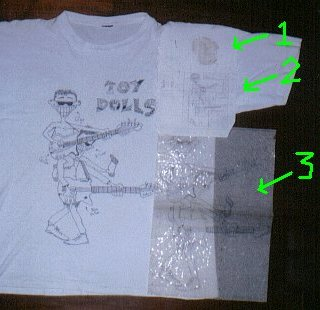

Matrizes em papel para desenhos traçados, sem preenchimento
Matrizes em papel servem primariamente para pinturas com caneta para tecido, de desenhos traçados, sem grandes áreas preenchidas, que com a caneta não fica uniforme.
1. Fazer no computador e imprimir
É o método mais RÁPIDO (para quem tem os recursos necessários), basta imprimir numa folha normal o desenho desejado.
2. Fazer à mão livre no papel
É o método mais PERFEITO (para quem tem o dom de desenhar), pois só depende da competência do artista.
3. Decalcar um desenho de uma capa de disco ou similar
É o método mais NATURAL (para quem não tem nem os recursos da informática, nem o dom de desenhar), pois pega-se um desenho pronto, já no tamanho correto, e apenas o decalca (redesenha) no papel. Isso se necessário, pois se os traços do desenho original estiverrem fortes, este mesmo pode ser usado de matriz, sem precisar passar para o papel.
4. Ampliar um desenho pequeno
É o método mais TRABALHOSO, havendo duas possibilidades:
Quem tem computador: amplie o desenho num programa de edição de imagens qualquer, imprima e refaça no papel as curvas que ficarem "quadradas".
Outros: amplie o desenho na mão, quadriculando o original, fazendo uma matriz quadriculada do tamanho desejado, e o redesenhe quadrado por quadrado. Trabalhoso, mas gratificante.

Exemplo de ampliação: (1) O desenho original estava impresso no cantinho do CD, e foi decalcado para o papel manteiga. (2) Ampliado usando a técnica dos quadradinhos. (3) Novamente ampliado para o tamanho final e então passado à camiseta.
Matrizes em chapas para desenhos com preenchimento
Matrizes em chapas de papelão, de plástico, de madeira, de <coloque-seu-material-preferido-aqui> servem para desenhos com bastante preenchimento (geralmente letras, logos, desenhos simples), para serem pintados com tinta para tecido. Entenda por chapa qualquer material de espessura fina e área grande. É desejável que não empene nem se dissolva em água.
{kind=link}
Exemplo de "chapa": um pedaço de persiana de janela (de PVC), recortado com estilete. A mesma chapa serviu para pintar as duas cores.
{kind=link}
Use a criatividade. Esta camiseta foi "pintada" com água oxigenada + descolorante de cabelo :)
Para fazer o desenho matriz em papel, use qualquer uma das técnicas explicadas no item anterior "matrizes em papel para desenhos traçados, sem preenchimento".
Com a matriz em papel pronta, cole-a na chapa e recorte-a no traçado do desenho, sendo que os buracos que ficarão com estes recortes serão os buracos por onde passará a tinta para pintar a camiseta.
Aprenda mais:
- Como pintar o cabelo com papel crepom
- Como retirar os pontos de uma ferida (machucado, sutura)
- Adesivo para colar na lataria do carro (Plotter, Vinil)
- Como fazer um barquinho de papel
- Como pintar camiseta com caneta para tecido
- Como pintar camiseta com tinta para tecido
- Porta-fitas cassete (k7) feito com palitos de sorvete
- Como fazer etiquetas para fitas cassete (k7)